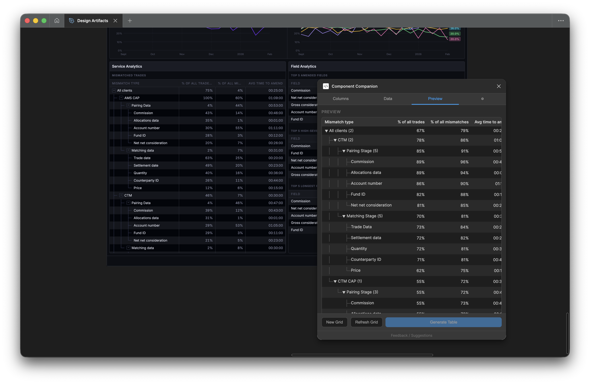
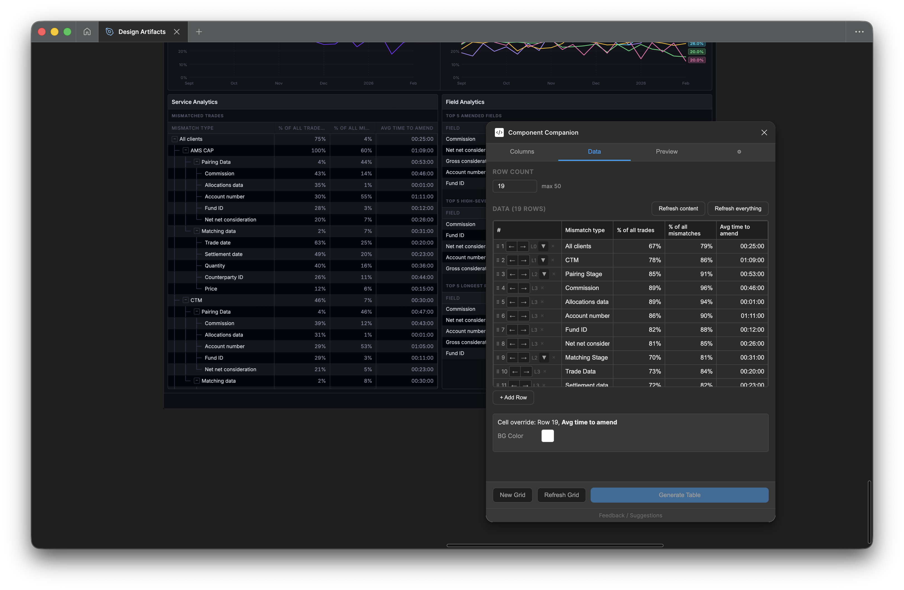
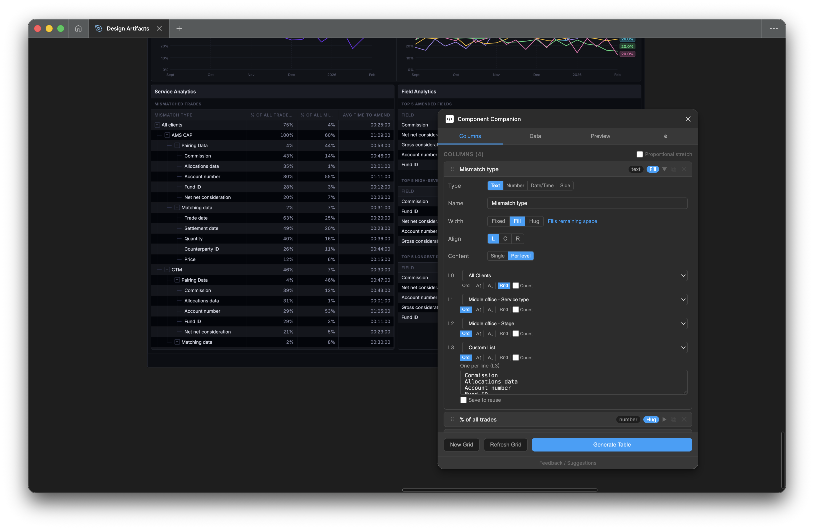

A self-initiated Figma plugin built with Claude Code that generates production-quality data tables from the Fidessa component library, cutting data grid setup time by 80%.
Part One
Overview
Context
As the sole UX designer supporting a large product surface, moving efficiently on production-heavy work is not optional. It’s what creates space for the design thinking that actually matters.
Fidessa is built on data grids. Nearly every screen in the platform is organized around tables: order grids, allocation views, position summaries, depth-of-market panels. Designing these screens realistically, with correct component usage, accurate column widths, zebra striping, and tree hierarchies, is the baseline expectation before any stakeholder review or user testing.
The Problem
A single data grid takes at least 15 minutes to build correctly by hand. A typical Fidessa screen has five or six. That is over an hour of time that competes directly with design thinking and iteration.
Existing Figma plugins don’t solve this. They are not designed around a specific design system’s component variants, and they produce generic output that doesn’t reflect how the product actually looks.
Before
Build each table manually: place components, set variants, align columns, apply zebra striping, write realistic content per cell.
15+ min
per table
After
Configure columns, rows, and data. Generate in one click. The output is a fully styled Figma frame ready for prototyping.
~3 min
per table
The Middle Office allocations dashboard made the cost undeniable. The goal of that project was to explore how the same dataset could be arranged in more than 30 different ways, each surfacing different operational insights. Communicating those differences required realistic grids, not wireframes.
Middle Office vs. Front Office
Front office projects
One grid created and reused across projects with minor changes. The front office persona is stable; the core grid layout rarely changes between design iterations.
Middle Office dashboard
17 different grid configurations, each representing a distinct way to surface the same allocation data. Every one needed to be realistic enough to support a stakeholder or user testing session.
Building 17 grids by hand was not a viable approach. The time cost would have consumed the project.
The Solution
Component Companion is a Figma plugin that connects directly to the Fidessa component library and generates fully styled, realistic data tables from a simple configuration. The output is a standard Figma frame, fully editable and ready for prototyping.

The live preview tab, which updates as columns, rows, and data are configured, before generating to the Figma canvas
Key capabilities
Column types
Seven types with realistic data pools: text (names, companies, securities), number, percentage, pill, status, date/time, and side (buy/sell indicator). Each draws from pools of 50+ realistic values.
Tree nesting
Up to four indent levels with visual tree connectors. Parent rows automatically aggregate their children, showing sums, averages, or leaf counts. Buy/sell indicators bubble up from children to parents.
Column width modes
Fixed (pixel-precise), fill (absorbs remaining width), or hug (auto-sizes to the widest cell content). Proportional stretch scales all columns to a target width in one click.
Saved configurations
Every generated table stores its full setup. Select it, reopen the plugin, and all settings reload. Tweak one thing and regenerate without starting over.
Design system support
Built-in profiles for Fidessa Desktop and ION Web Components. Custom profiles can be created for any component set in any Figma file.
Live preview
A preview updates as columns, rows, and data are configured. The generate button is locked until the preview reflects the current settings, preventing mismatched output.

Per-level content configuration: each indent level maps to its own data source: saved lists, person names, company names, or securities
Part Two
The Build
Working with Claude Code
The plugin required working with the Figma Plugin API and TypeScript/React, neither of which had been part of previous work. A coding background made it approachable; Claude Code handled the implementation.
The plugin was built concurrently with the Middle Office dashboard project. Rather than building in isolation and testing later, each new capability was validated against real design work as it was added. That feedback loop shaped every decision about what to build next.
How Claude Code was used
Identify the problem
Describe the design requirement precisely. What does the plugin need to do, and why? Not the implementation, the outcome.
Describe the feature
Explain the expected behavior in plain language. Claude Code generated the implementation and walked through its logic.
Review the output
Test in Figma against real design work. Identify gaps, edge cases, or behaviors that didn’t match the intent. Feed those back and iterate.
Each feature started with a design requirement: what the plugin needed to do and why. Claude Code handled the translation from that intent into working TypeScript. The output was tested against real design work before anything shipped.

A typical Claude Code session: describing a feature, Claude Code asking clarifying questions, then updating the codebase
The Hardest Part
Tree nesting was the most complex capability to get right. It wasn’t one problem. It was four interacting problems that each needed to work correctly before the others could be validated.
Visual connectors
The tree structure requires composable components: indent levels, vertical connector lines, horizontal branches, expand/collapse toggles, and spacers for ancestor pass-through lines. These need to compose correctly across every combination of nesting levels.
Parent/child detection
The plugin derives hierarchy automatically from row indent levels. A row is a parent if any subsequent row at a deeper indent level exists before the next row at an equal or shallower level. That logic needs to handle arbitrary nesting, including skipped levels and promoted parents.
Leaf counters
Parent rows append a count of their leaf descendants to the first column label, for example “Asia Pacific (4)”. That count is based on all descendant leaf rows, not just direct children, and updates correctly as rows are added, removed, or reindented.
Data aggregation
Number and percentage columns automatically aggregate children into parent rows. Buy/sell indicator columns aggregate upward: a parent shows Buy if all children are Buy, Sell if all are Sell, and Mixed otherwise. Each aggregation type has its own logic and interacts with the sort and level detection systems.

The Data tab: indent controls per row, the full data grid, and the resulting tree structure on the canvas
Getting these right required more iteration than any other part of the plugin. Each fix surfaced the next edge case. The CHANGELOG has 30+ entries touching tree nesting alone.
Part Three
Impact
On the Middle Office dashboard, working through 17 grid configurations would have consumed the project. The plugin made it a tractable part of the work instead of the bottleneck.
Time reduction
Data grid setup time, measured against the Middle Office project baseline.
Reported by colleagues
Designers who adopted the ION Web Components version reported a 70% speed increase for table work.
Grid configurations
Distinct grid layouts produced for the Middle Office dashboard in the time previously needed for two or three.
Beyond speed
- Correctness by construction. The plugin generates output directly from library components. There’s no risk of a number that doesn’t add up or a label that doesn’t match. What goes into the prototype is correct.
- Higher fidelity feedback. Realistic grids, not generic placeholders, surface reactions closer to what users would feel in the live product. That changes the quality of the feedback.
- Expanded scope. The plugin was built for Fidessa Desktop. It was later extended to ION Web Components, making it available to the broader team. Setting up the ION profile took a fraction of the time the Fidessa profile required, because the architecture was already in place.

Column configuration for the Middle Office dashboard: four indent levels, each mapped to a distinct data category from the Fidessa hierarchy
Source code
TypeScript, React 18, Webpack 5, Figma Plugin API. The full implementation including component library resolution, tree layout, and profile system is available on GitHub.
What's next
Component Companion is one of three internal tools in development. The others focus on design notes and stakeholder handoff. The pattern is the same: identify where time goes, build a tool that removes it, and redirect that time toward the work that requires design thinking.